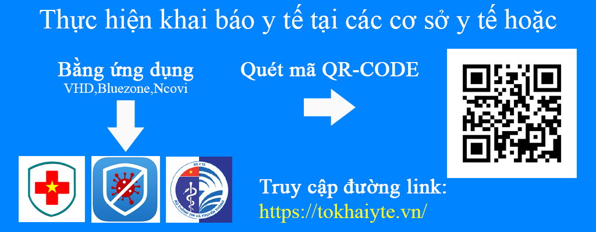
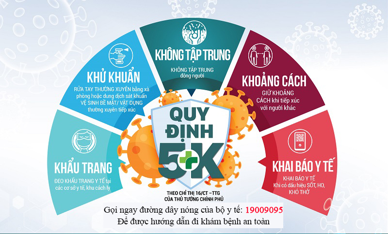

Nguồn gốc đại dịch |
Đại dịch COVID-19 là đại dịch bệnh truyền nhiễm với tác nhân là virus SARS-CoV-2 và các biến thể của nó đang diễn ra trên phạm vi toàn cầu. Khởi nguồn vào cuối tháng 12 năm 2019 với tâm dịch đầu tiên tại thành phố Vũ Hán thuộc miền Trung Trung Quốc đại lục, bắt nguồn từ một nhóm người mắc viêm phổi không rõ nguyên nhân. Giới chức y tế địa phương xác nhận rằng trước đó họ đã từng tiếp xúc, chủ yếu với những thương nhân buôn bán và làm việc tại chợ bán buôn hải sản Hoa Nam. Các nhà khoa học Trung Quốc đã tiến hành nghiên cứu và phân lập được một chủng coronavirus mà Tổ chức Y tế Thế giới lúc đó tạm gọi là 2019-nCoV có trình tự gen giống với SARS-CoV trước đây với mức tương đồng lên tới 79,5%.
|
Thống kê tình hình Covid tại Việt Nam
|
Số ca nhiễm |
Đang điều trị |
Khỏi |
Tử vong |
|
232.937 |
148.440 |
80.348 |
4.145 |
Số liệu được cập nhật lúc 7:00am ngày 11/8/2021
Dữ liệu được tham khảo tại:https://ncov.moh.gov.vn/
Nhận xét
Tốc độ lây nhiễm ở Việt Nam hiện tại đang tăng rất nhanh và có xu hướng nhanh hơn. Con số nhiễm bệnh đã vượt qua 230 ngàn người và ta cũng thấy được tỉ lệ tử vong của những ca nhiễm là rất cao. Tỉ lệ ca nhiễm trên ca chữa khỏi đã vượt quá 5%. Vì vậy, để bảo vệ sức khỏe cho bản thân và toàn cộng đồng, chúng ta nên đảm bảo phải phòng tránh dịch một cách tốt nhất. Hãy đọc tiếp để lấy lời khuyên của chúng tôi về cách phòng dịch.
Cách phòng tránh dịch COVID-19
1. Thường xuyên rửa tay đúng cách bằng xà phòng dưới vòi nước sạch, hoặc bằng dung dịch sát khuẩn có cồn (ít nhất 60% cồn).
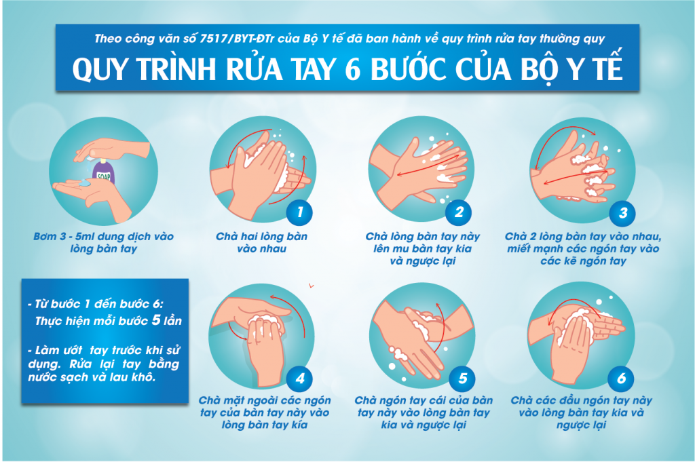
2. Đeo khẩu trang nơi công cộng, trên phương tiện giao thông công cộng và đến cơ sở y tế.
| 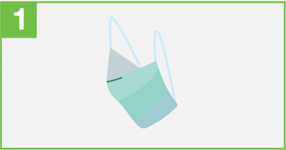 | Lựa chọn khẩu trang y tế đảm bảo chất lượng |
| Đeo mặt xanh(có màu) ra ngoài, mặt trắng vào trong.Kẹp nhôm hoặc nhựa( đễ giữ phần mũi) hướng lên trên |  |
| 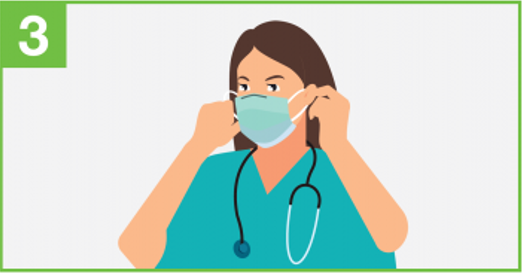 | Sử dụng 2 đầu ngón tay của mỗi bàn tay đồng thời lồng 2 dây đeo khẩu trang vào 2 tai hoặc lồng từng tai một sau đó chỉnh cho thật cân đối |
| Sử dụng tiếp ngón tay cái và ngón trỏ của một tay bóp nhẹ kẹp kim loại hoặc nhựa ở mặt trên khẩu trang để tạo độ kín giữa mũi và khẩu trang | 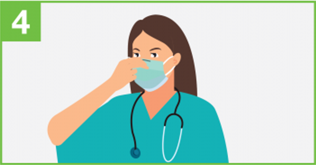 |
| 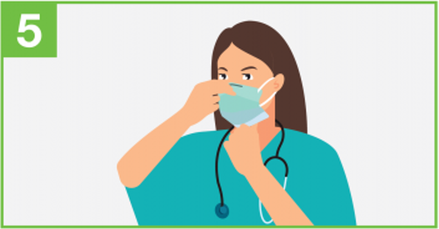 | Kéo nhẹ phần dưới dãn ra sao cho phần dưới phủ hết cằm |
| Khi tháo khẩu trang chỉ cần cầm vào dây đeo qua tai. Sau đó vứt khẩu trang đã qua sử dụng vào thùng rác | 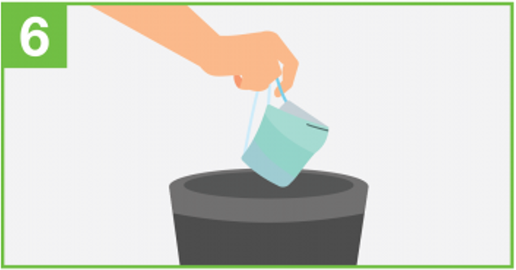 |
3. Tránh đưa tay lên mắt, mũi, miệng. Che miệng và mũi khi ho hoặc hắt hơi bằng khăn giấy, khăn vải, khuỷu tay áo.
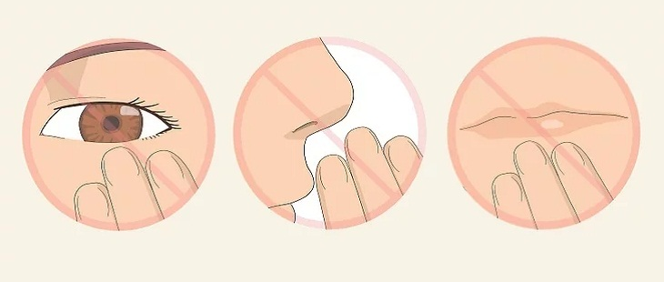
| 4. Tăng cường vận động, rèn luyện thể lực, dinh dưỡng hợp lý xây dựng lối sống lành mạnh. | 5. Vệ sinh thông thoáng nhà cửa, lau rửa các bề mặt hay tiếp xúc. | 6. Nếu bạn có dấu hiệu sốt, ho, hắt hơi, và khó thở, hãy tự cách ly tại nhà, đeo khẩu trang và gọi cho cơ sở y tế gần nhất để được tư vấn, khám và điều trị. |
|---|---|---|
| 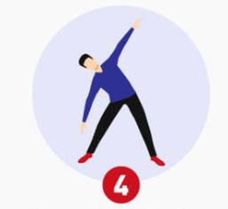 | 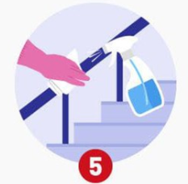 |
7. Tự cách ly, theo dõi sức khỏe, khai báo y tế đầy đủ nếu trở về từ vùng dịch.
8. Thực hiện khai báo y tế trực tuyến tại https://tokhaiyte.vn hoặc tải ứng dụng NCOVI từ địa chỉ https://ncovi.vn và thường xuyên cập nhật tình trạng sức khoẻ của bản thân.
9. Cài đặt ứng dụng Bluezone để được cảnh báo nguy cơ lây nhiễm COVID-19, giúp bảo vệ bản thân và gia đình: https://www.bluezone.gov.vn/.
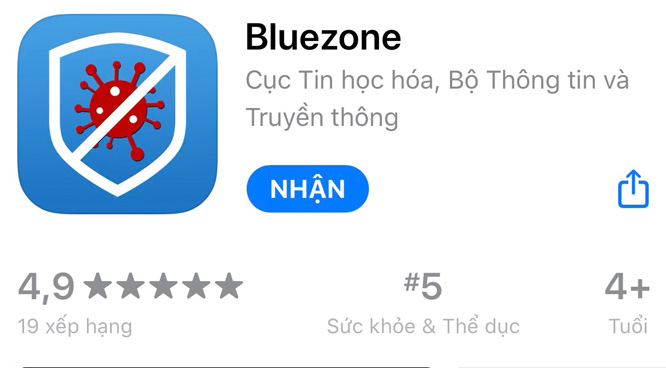